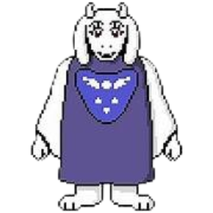

Voltar para a página inicial
TORIEL
Toriel é uma monstra gentil e maternal que encontra o protagonista logo
no início do jogo. Ela vive nas Ruínas e tenta proteger Frisk do perigo, especialmente
de outros monstros. Antes dos eventos do jogo, Toriel era a rainha do Subterrâneo,
casada com Asgore, mas se separou dele após a morte de duas crianças humanas.
Ela age como uma figura materna, ensinando Frisk a resolver puzzles e tentando impedir
o humano de sair das RUÍNAS para evitar que sofra. Apesar de seu comportamento
protetor, ela está disposta a lutar para tentar manter Frisk seguro, mas
relutantemente permite sua partida se for convencida.

"Prove para mim que você é forte o suficiente para sobreviver."